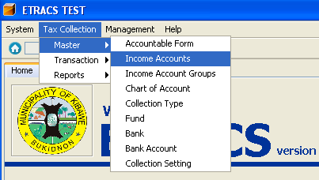
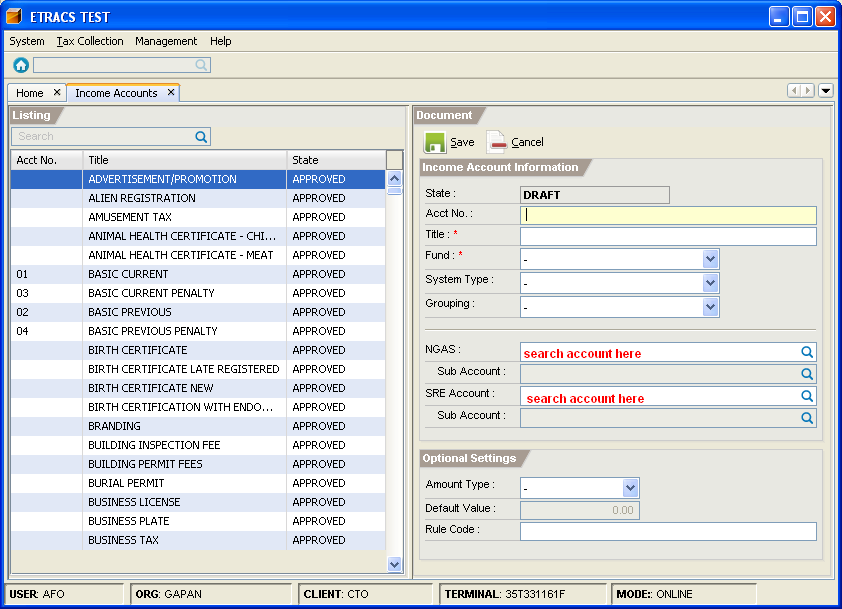
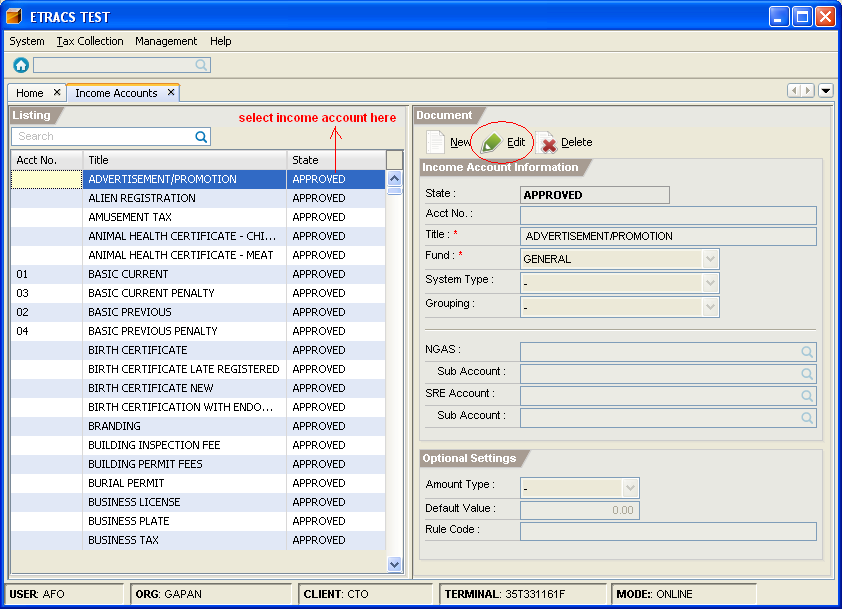

Managing Income Accounts
This facility enables you to add, edit, and delete an income account.
How to add an income account?
1. On the menu toolbar, go to "Tax Collection -> Master -> Income Accounts" item.

2. Click on the "New" button.
3. Fill in the income account information and optional settings.
To search an NGAS account or SRE account,
type atleast first three letters of the word, and press [Enter].

4. Click on the "Save" button.
5. Click on the "Approve" button.
How to edit an income account information?
1. Go to "Income Account" page. (Please refer to Adding an Income Account - Step 1)
2. Select the income account item from the list, and click on the "Edit" button.

3. Modify the income account information.
4. Click on the "Save" button.
How to delete an income account?
1. Go to "Income Account" page. (Please refer to Adding an Income Account - Step 1)
2. Select the income account item from the list, and click on the "Delete" button.